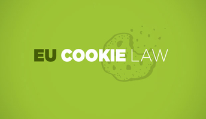

Kolačići (engl. cookies) su mehaniyam čuvanja podataka veb aplikacija na klijentskoj mašini. Na primer, mogu se čuvati korisničko ime i šifra za pristup veb aplikaciji, odabrane preferencije kao što su veličine slova, teme sajta i slično. U zavisnosti od tipa kolačića koji se koristi, ovi podaci se mogu slati pri svakom narednom korišćenju aplikacije.
Sa kolačićima se može raditi kroz JavaScript jeyik. Na primer, kod:
document.cookies="korisnik= Pera Peric: expires= Thu, 1 Dec 2016 12:00:00 UTC":
postavlja kolačić sa imenom korisnik koji se može čuvati na klijentskoj mašini do 1. decembra 2016. godine.
Kolačići mogu sadržati važne informacije. Zato pregledači podrazumevano sprovode strogu politiku i ne dele kolačiće
U maju 2012. godine EU je propisala zakon po kome veb sajtovi koji koriste kolacice moraju ekplicitno da obaveste korisnika i traze njegovu saglasnost.
|
Svojstva kolacica:
|
Vise informacije se moze procitati na strani Vikipedije |